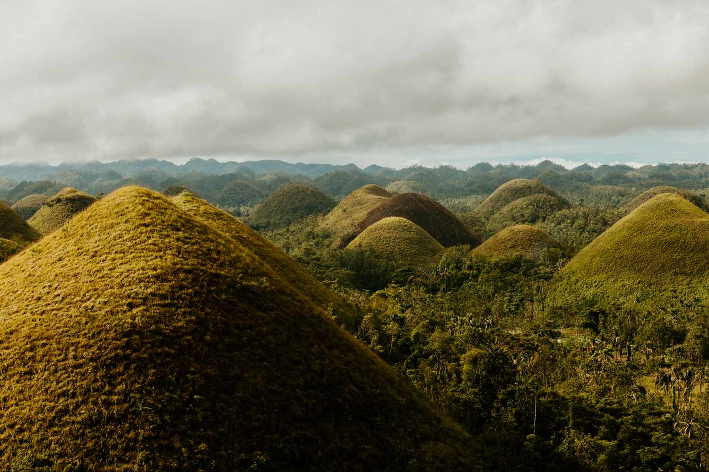
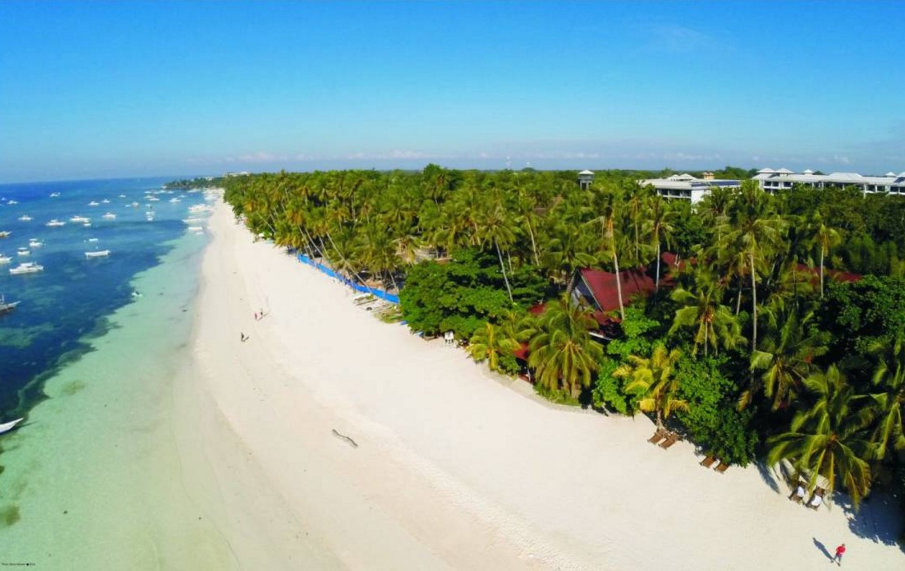
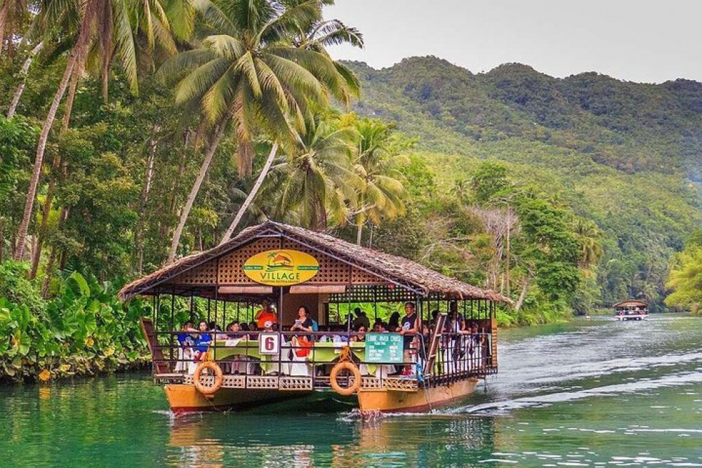
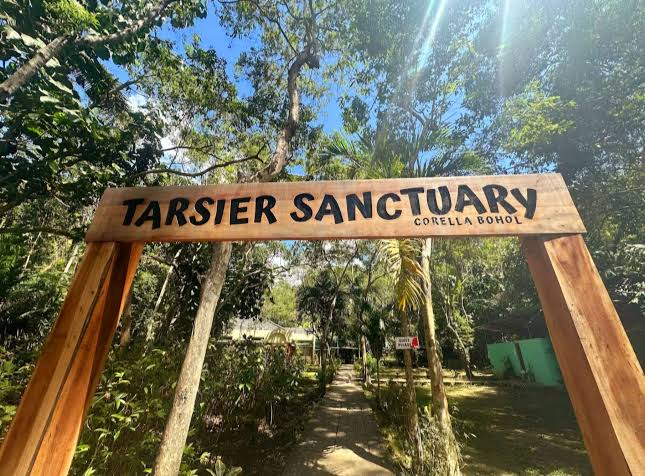

Discover breathtaking natural wonders, vibrant culture, and unforgettable experiences in Bohol.
Welcome to Bohol
The Philippines is home to thousands of breathtaking islands, and Bohol stands out as one of its premier destinations. From ancient geological formations to pristine coral reefs and rich heritage, explore what makes this paradise special.
About the Place: The Chocolate Hills

The famous Chocolate Hills of Carmen, Bohol turning brown during the dry season.
Bohol is famous for the Chocolate Hills, a unique geological formation consisting of over 1,200 symmetrical, cone-shaped hills. During the dry season, the lush grass dries up and turns brown, resembling chocolate mounds spread across the landscape.
Top Attraction: Panglao Island

White sand beach shoreline and sparkling clear waters along Panglao Island.
Panglao Island is Bohol's primary coastal attraction, renowned worldwide for its white-sand shores, clear turquoise waters, and vibrant marine sanctuaries perfect for diving and snorkeling.
Activities: Loboc River Cruise

A floating restaurant vessel taking tourists on a scenic river cruise down the Loboc River.
One of the most popular activities in Bohol is taking a floating restaurant cruise down the peaceful Loboc River. Visitors can enjoy local Filipino buffets and live acoustic performances while taking in the jungle scenery.
Culture & Wildlife: The Philippine Tarsier

A delicate Philippine tarsier resting quietly on a tree limb in Corella, Bohol.
Bohol's natural heritage is closely tied to the Philippine Tarsier, one of the world's smallest primates. Visiting protected sanctuaries offers insight into local conservation efforts and the delicate wildlife endemic to the region.
Travel Guide: Exploring Hinagdanan Cave
Inside Hinagdanan Cave featuring limestone rock formations and an underground freshwater pool.
Located in Dauis, Hinagdanan Cave is a convenient stops for travelers. Sunlight streams through roof openings into a natural underground lagoon where visitors can cool off in freshwater after exploring the limestone formations.